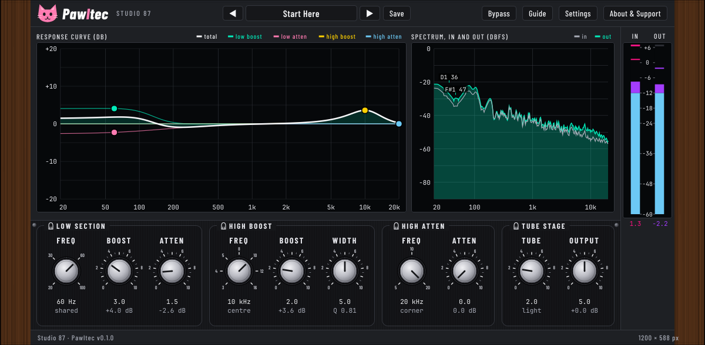

Pawltec
A free, open source, cat-themed tube-style program equalizer (VST3) by Studio 87.

The real plugin window, rendered by the compiled editor.
Download
Releases: one zip with installers for Windows, macOS and Linux, the PDF manual and checksums. Test build: installers are unsigned, so Windows and macOS warn about them (see INSTALL.txt in the zip).
Manual and mockup
The PDF manual is in each release. The original interactive design mockup is kept for reference.
Source
github.com/SpeakingColors/pawltec. AGPL-3.0-or-later. Collects nothing, no network.